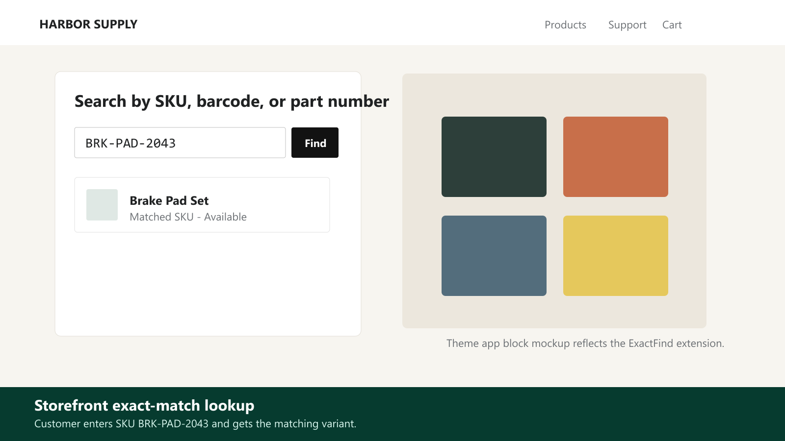
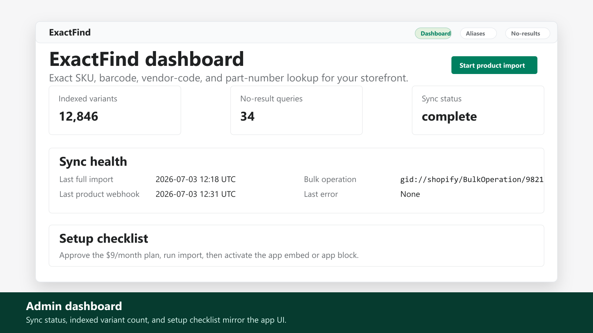
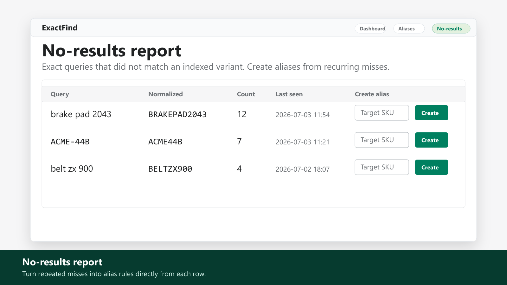
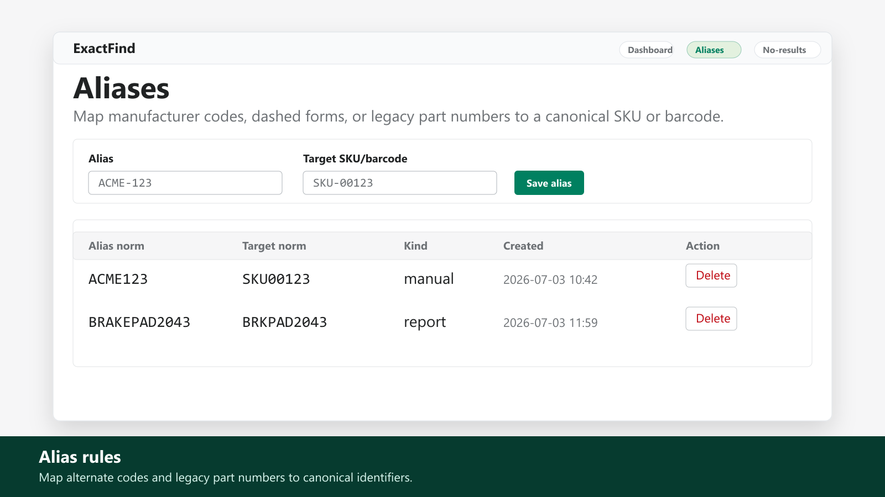
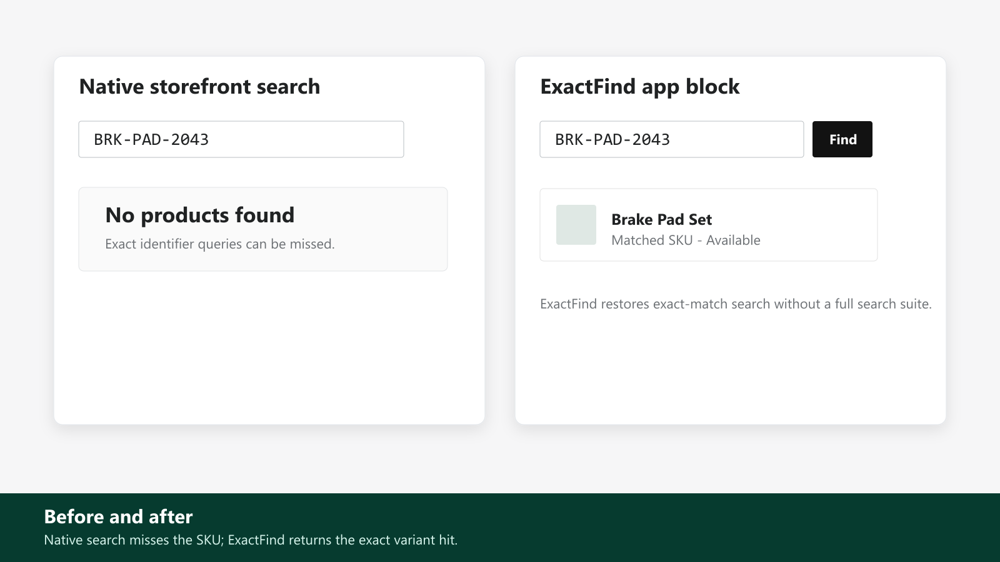

$9/month · 14-day free trial
ExactFind SKU & Part Search
Exact SKU, barcode & part number search your customers trust
ExactFind keeps a fast exact-match index of every variant identifier in your catalog and answers through your theme's search, or a dedicated part-number search block. Alias rules map manufacturer codes and legacy SKUs to the right product. A no-results report shows exactly what shoppers typed that found nothing, so you can fix it in one click.
Coming to the Shopify App StoreWhat it does
- Exact-match results for SKU, barcode, vendor code and part number queries
- Search block and theme embed for Online Store 2.0 themes, no code edits
- Alias rules map manufacturer, legacy, and dashed codes to the right variant
- No-results report with one-click create alias workflow
- Auto-sync via webhooks and bulk import with index freshness on the dashboard
Pricing
$9/month
14-day free trial. One focused plan for the features listed here.
Screenshots





FAQ
Does ExactFind replace my search app?
No. It is a focused exact-identifier layer for SKUs, barcodes, vendor codes, and part numbers, not a full search engine or filtering suite.
Can shoppers search manufacturer or legacy codes?
Yes. Merchants can create alias rules that map manufacturer, legacy, or dashed codes to the right variant.
Does it edit my theme code?
No code edits are required for the Online Store 2.0 app block or disabled-by-default app embed.
What happens when a query finds nothing?
ExactFind records the no-result exact query so the merchant can add an alias or fix catalog data.
Coming to the Shopify App Store
The store link will be added after app review approval.